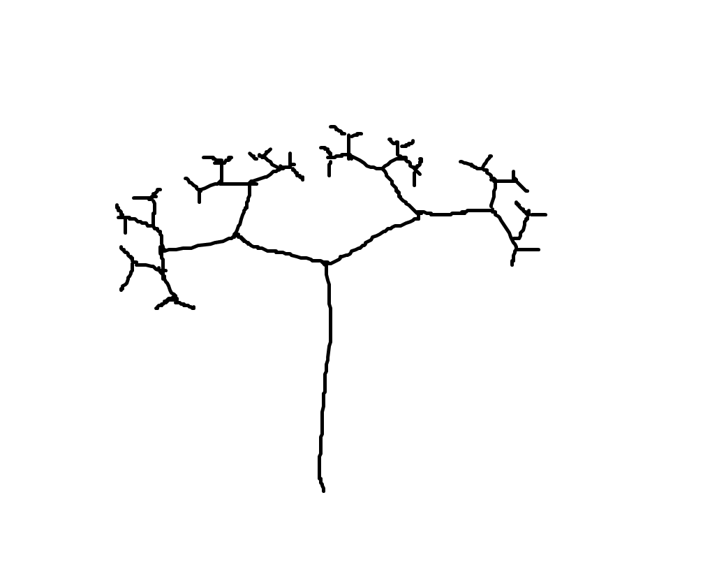

Grammar for music and poetry
Math Mode
Art and music Mode
Info
Welcome to a bachelor thesis project about Grammatical Framework and fractals!
This project was developed January to May of 2019 by a group of students at Chalmers University of Technology.
